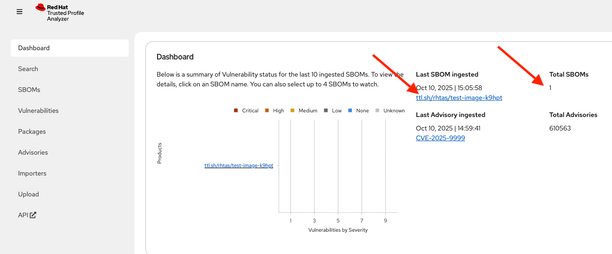
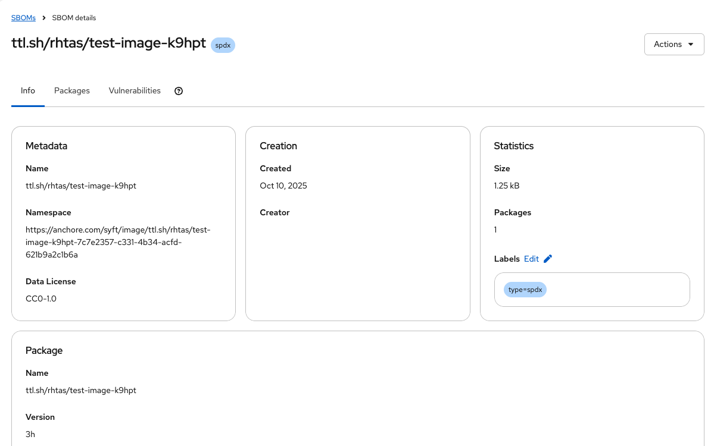
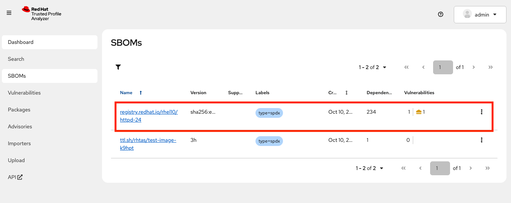
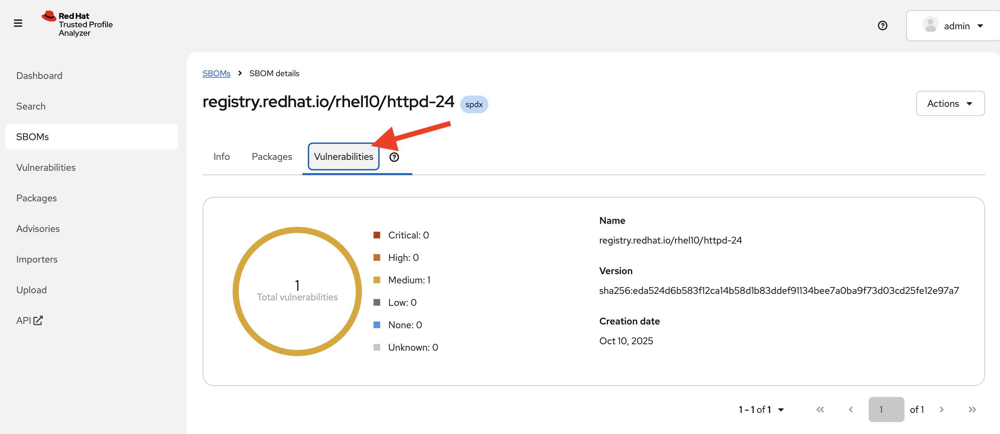
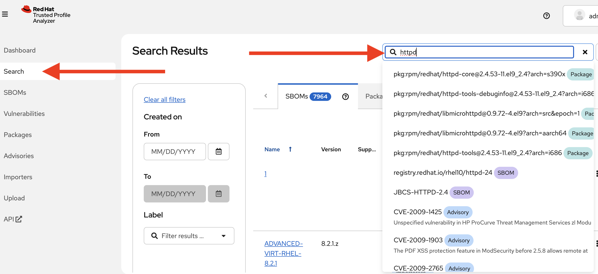
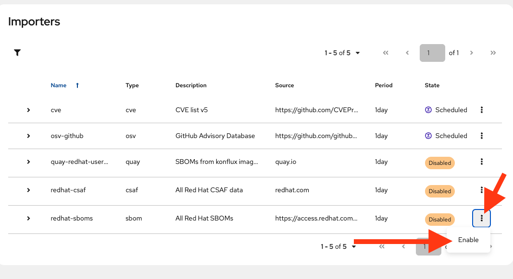

Installing and Configuring Red Hat Trusted Profile Analyzer (RHTPA) on RHEL
Red Hat Trusted Profile Analyzer is a proactive service that assists in risk management of Open Source Software (OSS) packages and dependencies. The Trusted Profile Analyzer service brings awareness to and remediation of OSS vulnerabilities discovered within the software supply chain.
Overview
RHTPA is Red Hat’s downstream redistribution of the Trustify project.
It addresses some of the problems developers and platform engineers face when keeping software safe and organized, helping to:
-
Deploy applications with fewer vulnerabilities
-
Meet compliance regulations for SBOM management and archiving
-
Know that trusted components are in use as early as possible
-
Reduce alert fatigue with fewer false positive by getting vendor vulnerability information from the actual vendor (VEX)
-
Analyze applications without downloading and installing
Practically speaking, RHTPA is a service that:
-
Ingests many Software Bill of Materials (SBOMs) - some that you create as part of your CI pipelines when building software artifacts, and some that are published by others (including Red Hat) that detail the content of their software. SBOMs have many facets, including the packages, their versions, and their dependencies. For more detail on SBOMs, vulnerability data, and security data that Red Hat provides, see The future of Red Hat security data.
-
Imports many Vulnerabilities and Advisories regarding known vulnerabilities in the global software supply chain
-
Provides proactive risk analysis by combining/cross-referencing the two sources of data
-
Provides a web interface to view the risk profile of your software supply chain.
You can install RHTPA on Red Hat Enterprise Linux by using a Red Hat provided Ansible Playbook. This Ansible deployment of RHTPA allows you to specify your own PostgreSQL database and OpenID Connect (OIDC) provider.
This exercise will guide you through the process of installing and configuring RHTPA on RHEL. The environment has pre-installed the following components to support the installation:
-
An OIDC provider, using the Red Hat Build of Keycloak.
-
A PostgreSQL database instance to store data related to SBOMs, vulnerabilities, and other data related to the security of your software supply chain.
The following steps will take you through the installation and configuration of RHTPA on RHEL. Not all configuration possibilities are covered in this module, but you can find more information in the RHTPA Ansible collection documentation.
Install Trusted Profile Analyzer
Setup Environment Variables
We need to define a few variables to point at the pre-installed Keycloak instance (including realm and client names and secrets).
-
Copy and paste (you can click the small icon to the right of the command to copy, and then CTRL-V or CMD-V on MacOS to paste) into the terminal and press ENTER to run the command and assign the necessary environment variables:
export GUID=my-guid export BASE_HOSTNAME={base_hostname} export KEYCLOAK_REALM=chicken # yes, it really is chicken üêî export KEYCLOAK_CLI_CLIENT_ID=cli export KEYCLOAK_URL=https://rhbk.${BASE_HOSTNAME} export OIDC_ISSUER_URL=$KEYCLOAK_URL/realms/$KEYCLOAK_REALM export OIDC_CLIENT_SECRET={rhbk_admin_password}These environment variables define the various endpoints and configuration for RHTPA, and are read from the CLI commands you’ll run later in the module.
-
Next, make sure you have access to the Red Hat Registry. Run these two commands separately, replacing the username and password or service account token with your own (don’t just copy-paste, you’ll need to replace the placeholders with your own values):
export REGISTRY_USERNAME='<your username>' export REGISTRY_PASSWORD='<your password or service account token>' -
To verify that your credentials are correct, attempt to login to the registry using
podman login:podman login registry.redhat.io -u "$REGISTRY_USERNAME" -p "$REGISTRY_PASSWORD"You should see
Login Succeeded!indicating that you are logged in. If you get an error, confirm that your credentials are correct and that you have the correct permissions to access the registry.
Create Ansible Variables
-
Create the Ansible variables file which will be used by the playbook when installing RHTPA.
cat << EOF > ~/rhtpa_vars.yml # Core Configurations rhel: true # Image Configurations tpa_single_node_trustification_image: registry.redhat.io/rhtpa/rhtpa-trustification-service-rhel9:2.1.0 tpa_single_node_registry_username: "$REGISTRY_USERNAME" tpa_single_node_registry_password: "$REGISTRY_PASSWORD" # PostgreSQL (1) tpa_single_node_pg_host: utility tpa_single_node_pg_port: 5532 tpa_single_node_pg_db: rhtpa tpa_single_node_pg_admin: {tpa_single_node_pg_admin} tpa_single_node_pg_admin_passwd: {tpa_single_node_pg_admin_passwd} tpa_single_node_pg_user: {tpa_single_node_pg_user} tpa_single_node_pg_user_passwd: {tpa_single_node_pg_user_passwd} tpa_single_node_pg_ssl_mode: prefer # OIDC (2) tpa_single_node_oidc_issuer_url: "$OIDC_ISSUER_URL" tpa_single_node_oidc_frontend_id: frontend tpa_single_node_oidc_client_id: "$KEYCLOAK_CLI_CLIENT_ID" tpa_single_node_oidc_client_secret: "$OIDC_CLIENT_SECRET" # Podman Configurations (3) tpa_single_node_podman_network: rhtpa # Host Level Configurations (4) tpa_single_node_kube_manifest_dir: /etc/rhtpa/manifests tpa_single_node_system_packages: - podman - postgresql # Certificates (5) tpa_single_node_tls_trust_anchor_cert: /home/lab-user/rhtpa-root.pem tpa_single_node_tls_server_cert: /home/lab-user/rhtpa-server.pem tpa_single_node_tls_server_key: /home/lab-user/rhtpa-privkey.pem EOF1 The PostgreSQL database instance to store data related to SBOMs, vulnerabilities, and other data related to the security of your software supply chain. It has been pre-installed and configured for you on the utilitynode.2 This uses the pre-installed Keycloak instance as the OpenID Connect provider. 3 The name of the network to use for the Podman containers. It is created automatically by the playbook. 4 The directory to store the Kubernetes manifests for the Podman containers. 5 The system packages to install on the node.
Create Ansible Playbook
-
Create the Ansible playbook which is the main entry point for installation.
cat << EOF > ~/install_rhtpa.yml --- - name: Install RHTPA hosts: rhtpa become: true tasks: - name: Set fact to bind to all interfaces ansible.builtin.set_fact: tpa_single_node_rhel_host: "0.0.0.0" - name: Create Required Directories ansible.builtin.file: path: "{{ item }}" state: directory loop: - "/root/.config/containers" - "{{ tpa_single_node_kube_manifest_dir }}" - "{{ tpa_single_node_kube_manifest_dir }}/Secrets" - name: Create Policy File ansible.builtin.copy: dest: /root/.config/containers/policy.json content: | { "default": [ { "type": "insecureAcceptAnything" } ], "transports": { "docker": { "registry.redhat.io/rhtpa-trustification-service-rhel9": [ { "type": "insecureAcceptAnything" } ] } } } mode: '0644' - name: Call trusted_profile_analyzer role (OS Task) ansible.builtin.include_role: name: redhat.trusted_profile_analyzer.tpa_single_node tasks_from: os.yml - name: Check if RHTPA network exists ansible.builtin.command: cmd: "podman network inspect {{ tpa_single_node_podman_network }}" register: network_inspect_result failed_when: false changed_when: false - name: Create RHTPA network (without DNS Support) ansible.builtin.command: cmd: "podman network create --disable-dns {{ tpa_single_node_podman_network }}" when: network_inspect_result.rc != 0 changed_when: true - name: Call trusted_profile_analyzer role (Podman Task) ansible.builtin.include_role: name: redhat.trusted_profile_analyzer.tpa_single_node tasks_from: podman.yml - name: Call trusted_profile_analyzer role ansible.builtin.include_role: name: redhat.trusted_profile_analyzer.tpa_single_node tasks_from: infra/main.yml EOF
Create Inventory File
-
If you did not do so already in the TAS section, create the inventory file which defines the hostnames of the managed nodes. We’ll use the
rhtpahostname for this exercise (rhtasis used for the earlier exercise).cat << EOF > ~/inventory [rhtas] rhtas [rhtpa] rhtpa [all:vars] ansible_user=lab-user EOF
Run Playbook to install RHTPA
You should have the following files in the ~/ directory (run ls -l ~/ to confirm):
-
rhtpa_vars.yml- The Ansible variables file to use with RHTPA configuration -
install_rhtpa.yml- The Ansible playbook to install RHTPA -
inventory- The inventory file to use specifying which hosts to use -
rhtpa-privkey.pem- The private key for the TLS certificates for RHTPA -
rhtpa-root.pem- The root TLS signed certificate for RHTPA -
rhtpa-server.pem- The server certificate for RHTPA
There may be other files (e.g. the rhtas- files used earlier for RHTAS), but these are the ones you should have. If you do not have these files, please go back and review the previous steps. If you do have the files, you can continue with the next step.
-
Run the following command to install RHTPA.
cd ~ && \ ansible-navigator \(1) -m stdout \(2) --eei=localhost/ansible_ee \(3) --pp=missing \(4) run install_rhtpa.yml \(5) -e @rhtpa_vars.yml \(6) --pae=false \(7) -i inventory(8)1 Ansible Navigator is used to enable running the playbook in the specific execution environment (which ansible-playbookcannot do).2 Displays the output of the playbook in the terminal. 3 The specific execution environment in which the playbook runs and contains the required Ansible Collections for the products. 4 Only pull the execution environment if not already present locally (which it is)) 5 The playbook to run. 6 The variables file to use. 7 Don’t create playbook artifacts (like JSON log files) 8 The inventory file to use
The installation will take several minutes to complete. Wait for it to finish before moving on! It should end with:
PLAY RECAP ******************************************************************************************
rhtpa : ok=50 changed=14 unreachable=0 failed=0 skipped=6 rescued=0 ignored=0If you see any errors, scroll up and check for errors in the output. Confirm the files exist in the /home/lab-user directory correctly and appear correct, then run the ansible-navigator command again.
Verify Trusted Profile Analyzer installation
To see the running services on the rhtpa node, run the following command:
ssh rhtpa sudo "podman pod ps --filter status=running"You should see:
POD ID NAME STATUS CREATED INFRA ID # OF CONTAINERS
cd332a1c99d0 importer-pod Running 22 minutes ago 30bf07ad7cf5 2
de6ab8f5960b server-pod Running 22 minutes ago 681b61bc815d 2The importer-pod is the pod for the importer service which supports operations for ingesting and retrieving supply-chain data. The server-pod exposes the main API for the RHTPA service, supporting the web interface and API for evaluating the risk profile of your software supply chain which we’ll explore later.
You can also retrieve logs of the services (e.g. the server service) by running the following command:
ssh rhtpa "sudo podman pod logs -f server-pod"Press CTRL-C (or CMD-C on MacOS) to exit the log output. This can be useful for debugging issues with the RHTPA installation.
Access the RHTPA web interface
Access the RHTPA web interface. Login with the following credentials:
Username: {rhbk_admin_username}
Password: {common_password}You should land on the RHTPA dashboard:
"There is nothing here yet." Pretty boring, right? Out of the box, RHTPA comes configured with the following importer sources (you can see them by clicking on the Importers tab):
-
Red Hat CSAFs
-
Red Hat SBOMs
-
Common Vulnerability and Exposure (CVE) list version 5
-
The GitHub advisory database
-
Quay
These run continuously in the background, importing SBOMs and Advisories from public, well-known sources. By default, the Red Hat CSAF, Red Hat SBOM, and Quay data importers are disabled. These importers can run a long time before finishing, but you can enable any of these data importers at anytime. The Quay data importer scans the Quay registry looking for existing SBOMs for RHTPA to ingest and analyze.
So you see out of the box are thousands of known advisories and vulnerabilities (click on the Vulnerabilities and Advisories tabs to see them), but no SBOMs. Let’s ingest the simplest possible SBOM to demonstrate how you can ingest your own SBOMs as part of your CI pipelines.
Create your first SBOM
-
First, you’ll need a tool to create SBOMs. We’ll use Syft (an open source tool for creating SBOMs) for this exercise. Run the following command to install
syft:curl -sSfL https://raw.githubusercontent.com/anchore/syft/main/install.sh | sudo sh -s -- -b /usr/local/bin -
Create a test container image for which we’ll create an SBOM. Create the image with this command:
echo "FROM scratch" > ./tmp.Dockerfile podman build . -f ./tmp.Dockerfile -t ttl.sh/rhtas/test-image-$GUID:3h rm ./tmp.Dockerfile podman push ttl.sh/rhtas/test-image-$GUID:3h -
Run this command to generate a new SBOM in the SPDX version 2.3 format and output it in JSON format (and write it to a file with
tee):syft ttl.sh/rhtas/test-image-$GUID:3h -o spdx-json@2.3 | tee /tmp/test-sbom.json | jqThis is a super simple SBOM and since there are no packages (other than itself) and no dependencies, we should expect no vulnerabilities.
Ingest the SBOM into RHTPA
-
RHTPA exposes an API that you can use to ingest SBOMs. You could use raw
curlcommands to do the ingestion, but we’ll use an Open ID Connect tool called `oidc-cli`to handle the authentication. Install the tool with these commands:curl -L -o /tmp/oidc-cli https://github.com/ctron/oidc-cli/releases/download/v0.6.2/oidc-x86_64-unknown-linux-gnu && \ chmod a+x /tmp/oidc-cli && \ sudo mv /tmp/oidc-cli /usr/local/bin/oidc-cli && \ oidc-cli create confidential trusty --issuer $OIDC_ISSUER_URL \ --client-id $KEYCLOAK_CLI_CLIENT_ID \ --client-secret $OIDC_CLIENT_SECRETThe last
oidc-clicommand creates a short-lived confidential client session in Keycloak for you to use to authenticate to the RHTPA API. -
Ingest the SBOM into RHTPA:
curl -s -H "Authorization:$(oidc-cli token trusty -b)" -d @/tmp/test-sbom.json https://rhtpa.${BASE_HOSTNAME}/api/v2/sbomThis uses the
/api/v2/sbomendpoint exposed by RHTPA to ingest the SBOM (which you can do in your own CI pipelines). There are many more APIs exposed by RHTPA which you can use to manage your software supply chain. You can see the by clicking on the API tab (which takes you to the OpenAPI specification for RHTPA endpoints). For more detail the kinds of things you can do with the API, see the RHTPA REST API documentation.You should see something like:
{ "id": "urn:uuid:0199cec3-82f5-78e3-816a-3187171bf8eb", "document_id": "https://anchore.com/syft/image/ttl.sh/rhtas/test-image-d8r4x-d71421e3-55d0-4028-a062-bb7ce9c55fd3" }The output contains a unique ID for the entry and the ingested SBOM. Head back to the RHTPA web interface, reload the page and you should how have 1 SBOM in the database:
 -
Click on the name of the SBOM to see the details:
You should see the SBOM details, including the packages and their vulnerabilities.
This uses the API endpoints exposed by RHTPA to ingest the SBOM which you can use in your own CI pipelines (You can also do the same from the web interface). There are many more APIs exposed by RHTPA which you can use to manage your software supply chain. You can see the by clicking on the API tab (which takes you to the OpenAPI specification for RHTPA endpoints):
Ingest a More Interesting SBOM
Let’s try again with a more interesting SBOM. We’ll use the registry.redhat.io/rhel10/httpd-24 image, which is a Red Hat Enterprise Linux 10 image with the HTTPD package installed.
-
Run the following command to generate the SBOM and ingest it into RHTPA in one command:
syft registry.redhat.io/rhel10/httpd-24 -o spdx-json@2.3 | \ curl -s -H "Authorization:$(oidc-cli token trusty -b)" -d @- \ https://rhtpa.${BASE_HOSTNAME}/api/v2/sbom | jqYou will see a giant JSON object of the resulting SBOM (and there will be lots of
Invalid referencemessages as none of of the packages are known to our mostly empty SBOM database). But back on the RHTPA web interface, click on SBOMs and you should see the new SBOM in the database: -
Click on the name of the SBOM. Click on the Vulnerabilities tab and you should see the vulnerabilities for the HTTPD package (there may be one or more discovered since the writing of this module).
 -
You can also search for vulnerabilities, sboms, or any other object by using the search feature. Click on Search at the left, and try typing in
httpdto see the various packages, sboms, and any vulnerabilities that may exist:By populating RHTPA with your own SBOMs as part of your CI pipelines for each and every build, and enabling the public well-known importers configured in RHTPA, you can begin to evaluate the risk profile of your software supply chain on a regular basis. Feel free to enable some of the other importers (Click on the Importers tab and select enable for one or more disabled importers) to see what a larger set of SBOMs and vulnerabilities look like. After a little while you’ll see more interesting results:

Next Steps
With Red Hat Trusted Profile Analyzer installed and configured, you can now:
-
Deploy applications with fewer vulnerabilities
-
Meet compliance regulations for SBOM management and archiving
-
Know that trusted components are in use as early as possible
-
Reduce alert fatigue with fewer false positive by getting vendor vulnerability information from the actual vendor (VEX)
-
Analyze applications without downloading and installing
For more advanced configuration options (e.g. enabling OpenTelemetry tracing and metrics) and day-2 operation capabilities on RHEL, refer to the official Red Hat Trusted Profile Analyzer documentation.